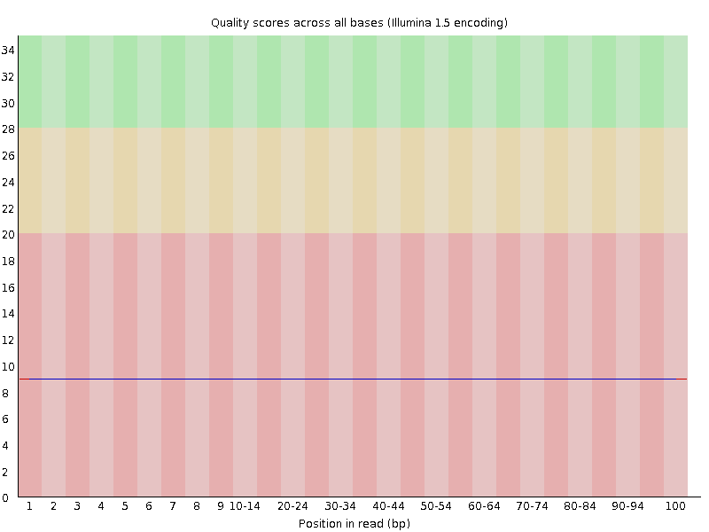
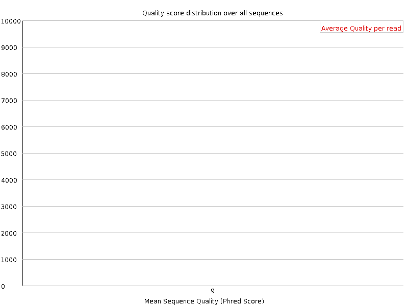
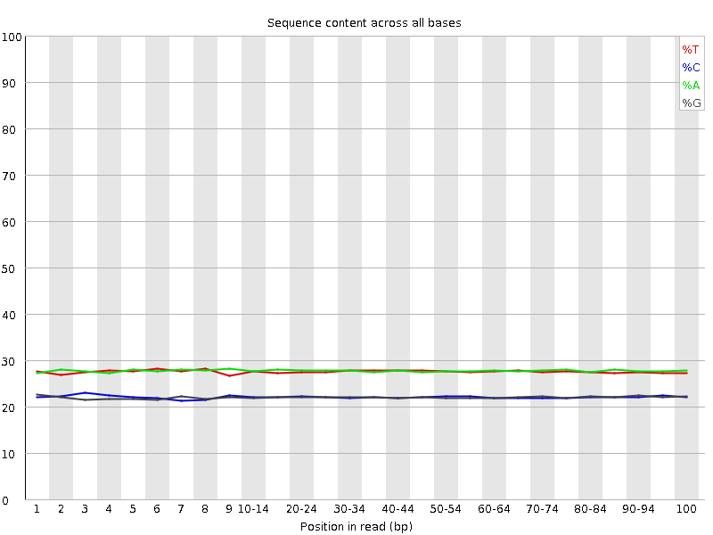
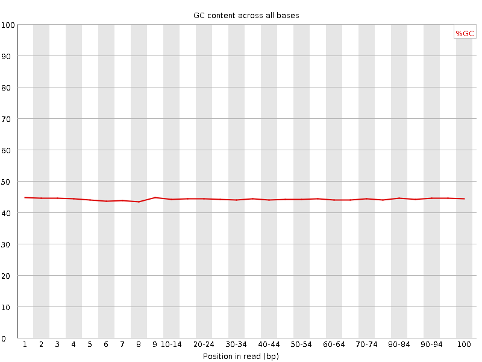
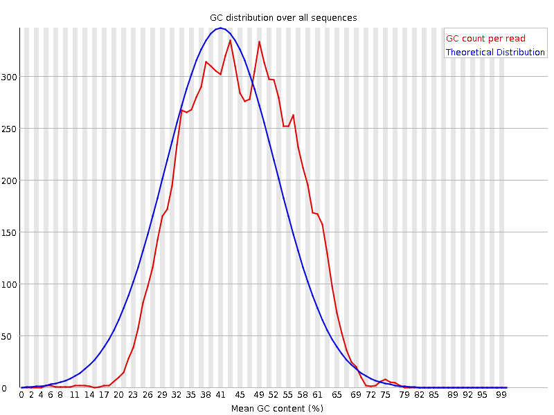
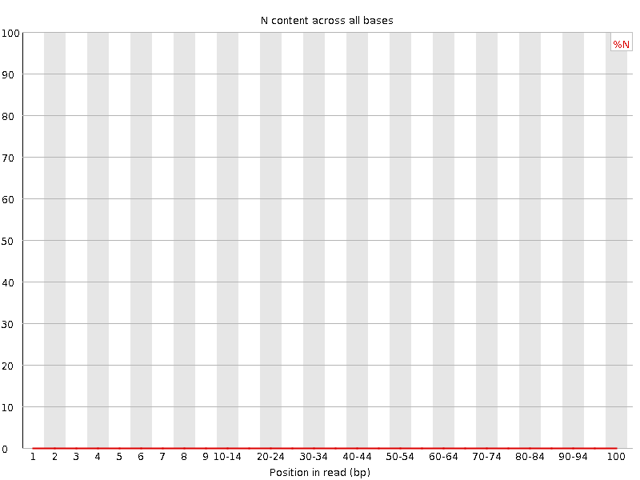
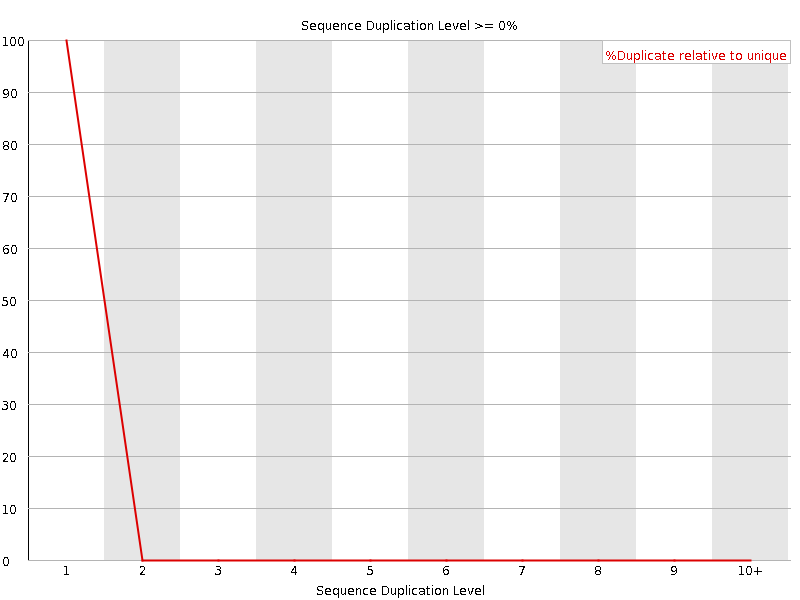
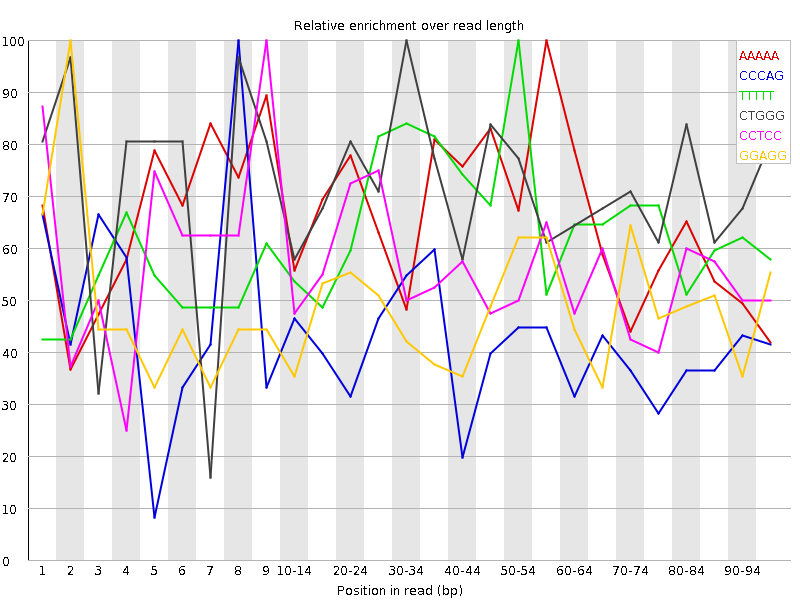

![[OK]](Icons/tick.png) Basic Statistics
Basic Statistics
| Measure | Value |
|---|---|
| Filename | chr22_157501105.simulated.custom.10x100 |
| File type | Conventional base calls |
| Encoding | Illumina 1.5 |
| Total Sequences | 10000 |
| Filtered Sequences | 0 |
| Sequence length | 100 |
| %GC | 44 |
![[FAIL]](Icons/error.png) Per base sequence quality
Per base sequence quality

Per sequence quality scores

Per base sequence content

Per base GC content

![[WARN]](Icons/warning.png) Per sequence GC content
Per sequence GC content

Per base N content

Sequence Length Distribution

Sequence Duplication Levels

Overrepresented sequences
No overrepresented sequences
Kmer Content

| Sequence | Count | Obs/Exp Overall | Obs/Exp Max | Max Obs/Exp Position |
|---|---|---|---|---|
| AAAAA | 6015 | 3.6559262 | 5.54315 | 55-59 |
| CCCAG | 2380 | 3.569805 | 8.639528 | 8 |
| TTTTT | 5165 | 3.4264655 | 5.222292 | 50-54 |
| CTGGG | 2130 | 3.3162832 | 4.6334543 | 30-34 |
| CCTCC | 2125 | 3.2116523 | 5.8036447 | 9 |
| GGAGG | 2075 | 3.206181 | 6.675037 | 2 |
| CCTGG | 2070 | 3.1911082 | 4.587796 | 45-49 |
| CCAGG | 2090 | 3.1660268 | 5.8170066 | 1 |
| CAGGC | 1970 | 2.9842455 | 5.089881 | 7 |
| GCCTG | 1925 | 2.9675765 | 7.3996716 | 3 |
| CAGCC | 1965 | 2.9473388 | 6.479646 | 4 |
| CCAGC | 1875 | 2.8123462 | 5.039725 | 1 |
| GCAGG | 1685 | 2.5779178 | 5.1405363 | 8 |
| CTGCC | 1625 | 2.4804115 | 5.128728 | 7 |
| GAGGC | 1620 | 2.4784725 | 5.8748984 | 5 |
| CCTGC | 1540 | 2.350667 | 5.861404 | 8 |
| CTGGC | 1485 | 2.2892733 | 5.17977 | 7 |
| CCTGA | 1590 | 1.9411821 | 5.274155 | 4 |
| CACCC | 1250 | 1.8564223 | 5.702929 | 6 |
| TGAGA | 1865 | 1.8392789 | 5.6805615 | 7 |
| CTCAC | 1515 | 1.8313906 | 5.802426 | 3 |
| TGCCC | 1125 | 1.717208 | 5.1287284 | 8 |
| GGGCA | 1100 | 1.6829134 | 5.8748984 | 1 |
| GGCAC | 1045 | 1.5830134 | 5.089881 | 2 |